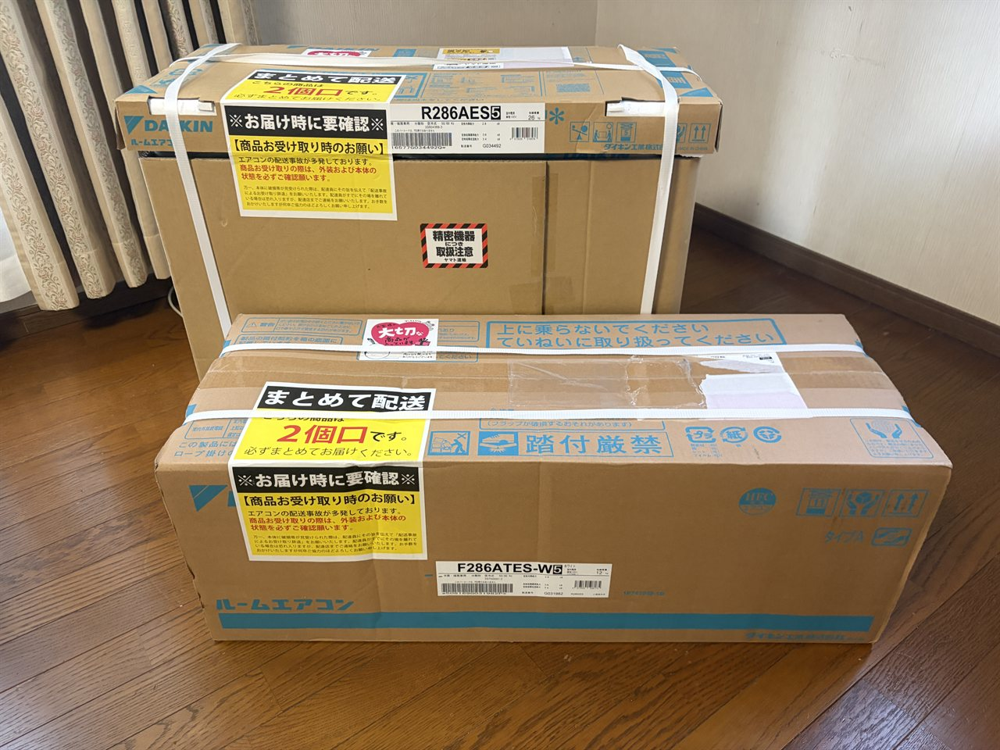
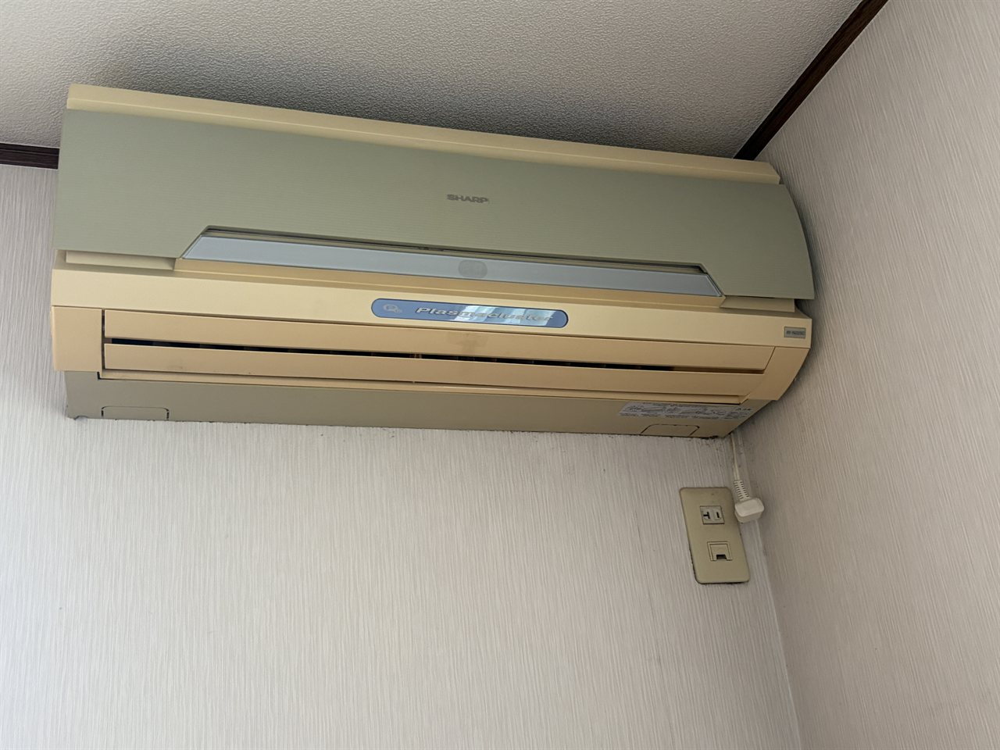
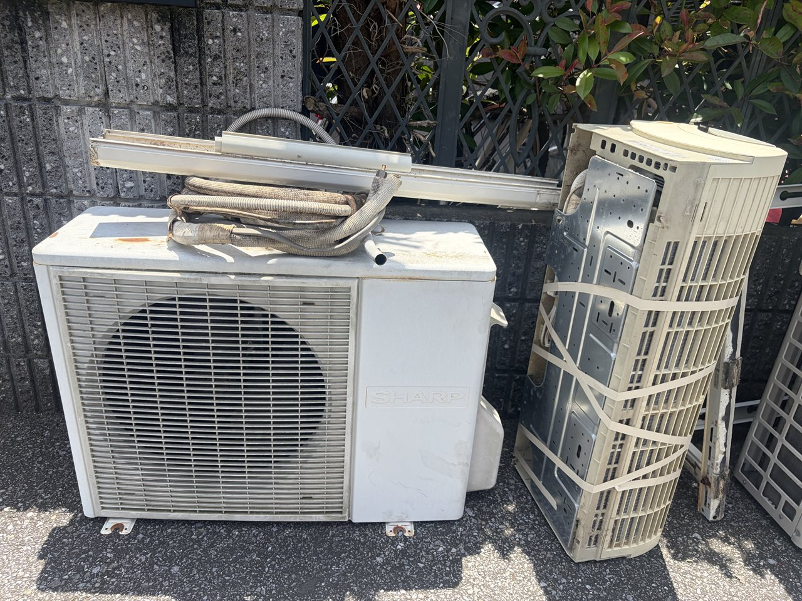
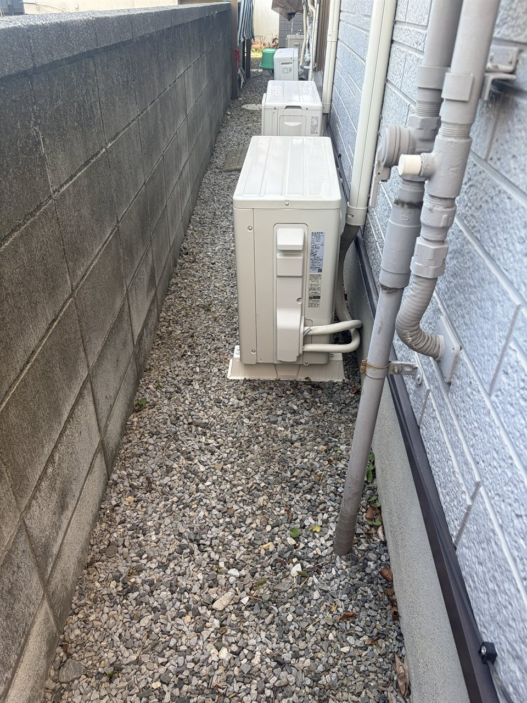
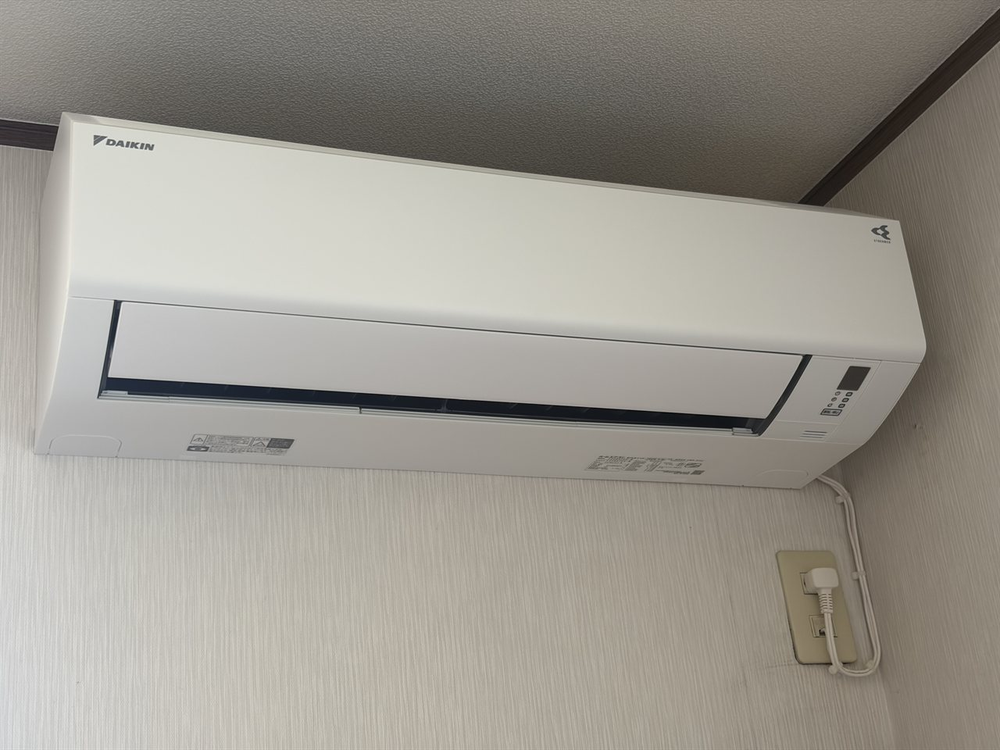
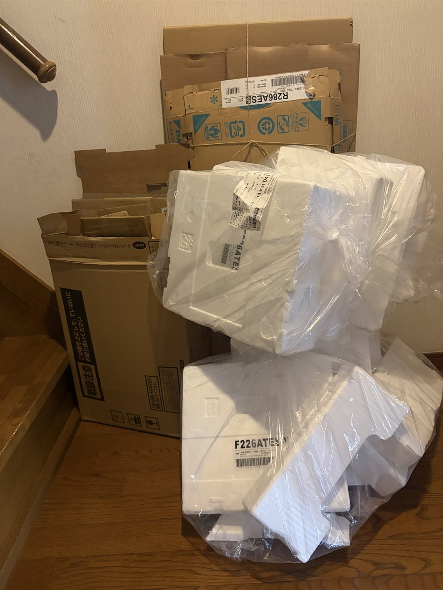
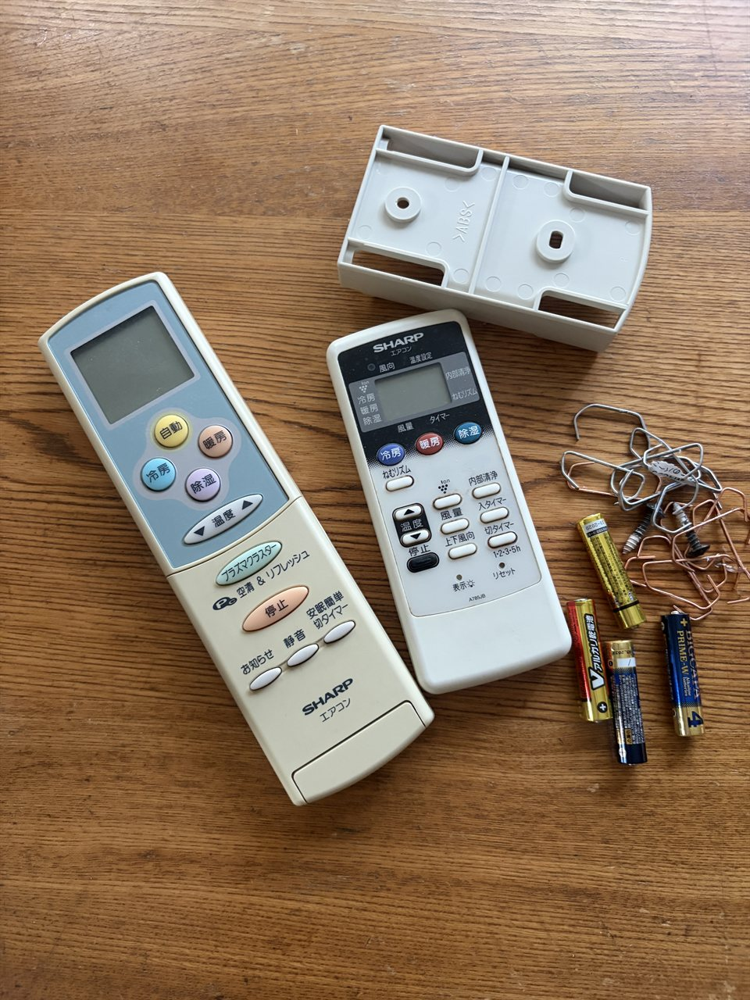
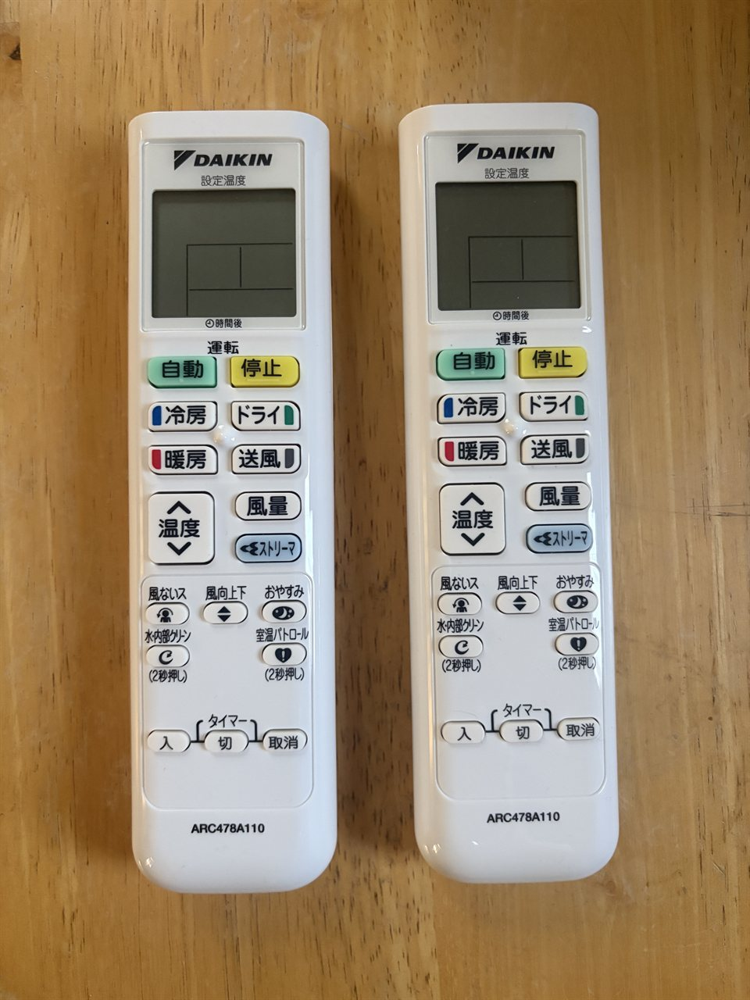

※ 本記事にはアフィリエイト広告が含まれています。
ぴかりんごのエアコン買い替え挑戦記、いよいよ設置工事編です。ネットで購入したダイキンのエアコン2台を、くらしのマーケットで設置工事してもらった当日の一部始終を、正直にお伝えしていきます。
7月4日、楽天スーパーセールで購入したエアコン2台がわが家に到着しました。設置工事業者の選定と正式な依頼は、6月末にエアコンを購入した直後に済ませてあります。工事の予約は、可能な限り早い日程の午前中で申し込み、7月8日9時に決定していました。
この記事を読むとわかること
- 設置工事当日の流れ（業者さんの到着〜完了まで）
- 2台設置の所要時間（結論：約5時間弱）
- 当日、業者さんが来る前にやっておくべき準備
- 見積もりより安くなった最終費用と、買い替え総額の全内訳
- 正直な失敗談（屋根上の排水ホースと防虫キャップ）
エアコンの機種選び・ネット購入・業者選びの「準備編」は、前編の 安いエアコンが買えなくなる！？2027年問題対策でエアコン2台を新調した話 にまとめています。あわせてどうぞ。

▲ 楽天スーパーセールで届いたダイキンのエアコン2台。室外機は「天地無用」を守って保管しました。
工事当日の1時間前｜業者さんから事前連絡
当日、くらしのマーケットのアプリのチャットに、工事予定の1時間前に業者さんからの事前挨拶・連絡メッセージが入りました。内容は「室内機の設置場所まわりのスペースを空けておいてほしい」というものでした。
当日の朝｜業者さんが来る前にやった5つの準備
私は朝からフル稼働！ 業者さんがいらっしゃる前に、家族5人分の洗濯を済ませつつ、以下の準備をしました。
- 業者さんに渡すドリンクが冷蔵庫にあるか確認。（事前に入れてあったのですが、家族がそうと知らずに飲んでしまっている可能性があるので念のため！）
- 室内機の設置場所まわりの家具の移動と簡単な清掃。（テレビと学習机が置いてあったので埃だらけ！ 掃除機とフローリングワイパーのドライ・ウェット、そしてぴかりんご家定番の「使い古しタオルをカットしたボロ雑巾」を駆使しました。）
- 2階廊下に置いてあった小さい棚2つを移動して清掃。
- 邪魔になりそうな部屋のカーテンを反対側にまとめる。
- 室外機付近に停めてある自転車3台を邪魔にならない場所へ移動。
一度に2台設置ともなると意外とやることが多くて、朝から滝汗を流しながらの準備でした。

▲ 取り外し前の古いエアコン（20年選手のシャープ）。長年おつかれさま、今日で見納めです。
まさかの早着！ 朝からてんやわんや
驚いたのが、業者さんが8時半に到着したことです。母のデイサービスのお迎えも9時ちょっと前、夫の出発時間も同じくらいなので、「9時の予約でちょうどよい」と思っていた私。ところが8時半に電話が！
借りている駐車場が自宅から少し離れているので、「近くまで来たらご連絡ください」とお願いしていたのです。夫が会社にいない日に工事日程を組まないと業者さんの車が停められないため、あえて平日に依頼していたのですが、夫の出社時間前に到着してしまって焦りました！！
業者さんの資材搬入の最中に母のデイサービスのお迎えが来てしまい、家の前が渋滞状態に。しかもこのタイミングで招かれざる客が……。母のシニアカーを玄関からポーチに出すと、その下からゴキブリが！！ その騒ぎを聞きつけた長男が、対処のために2階の自分の部屋から降りてきてくれました。
ちなみに余談ですが、この日は夫の部屋のエアコン室外機を設置するベランダで、特定外来生物に指定されているクビアカツヤカミキリまで見つけました。桜やスモモの樹を食い荒らす害虫なので本来は駆除しなければならないのですが、捕獲の準備をしているうちにどこかへ逃げられてしまいました。朝から立て続けの虫騒ぎです（笑）
いよいよ設置工事開始｜1台目（夫の部屋）
虫のことはさておき、9時前に資材の搬入が終わり、予定通り設置工事が始まりました。ここからは、待っている間は本当に何もすることがありません。
まずは夫の部屋の通常の設置工事から。暑いので「扇風機もかけてくださいね」と声をかけて、私は別の部屋で待ちました。近くで見られているのも気が散るだろうと思ってのことです。
1台目の設置が終わり、古い室内機と室外機を家の前の道路に搬出したのが10時10分頃。この後、ガスの検査をして試運転を行いますとのことでした。

▲ 取り外した旧室内機・室外機・配管を家の前に搬出。1台目が終わったのは10時10分頃でした。
特殊工事｜次男の部屋（屋根上の室外機を撤去）
そのあと、いよいよ6畳の次男の部屋の特殊設置工事が始まりました。試運転中の12畳の部屋をのぞくと、18度の設定でキンキンに冷えていて感動……！
次男の部屋は、旧室内機と、屋根の上に設置されていた旧室外機の取り外しからスタート。作業中にあまりうろうろするのも申し訳なくて詳しい時刻はわかりませんが、12時前にはすべての取り外しと新しい室内機の設置が終わった様子でした。
旧室内機と室外機の搬出が終わったタイミングで、気になることがあったので声をかけました。見積もり時に「古い配管化粧カバー」と「室外機設置架台」の処分を除外してもらっていたのですが、搬出品と一緒に置いてあったので確認したかったのです。（処分を自分でやる話は前編に書いています。）
過酷な作業に、水分補給のお願いを
工事開始から1時間ほど経った頃、「飲み物など大丈夫ですか？」と一度声をかけて、「大丈夫です」と言われていた私。でも、ここで「大丈夫じゃないです」なんて答える人はいませんよね。そこで「合間に水分補給されてくださいね！」と、用意していたダカラを1本お渡ししました。
日陰のない場所での長時間作業、しかも高所作業も入る過酷なお仕事です。熱中症にでもなっては大変と思い、少し強引にお勧めしてしまいました。
工事完了！ 所要時間と支払い
そして、すべての工事が終了したのが13時15分頃。業者さん到着から、お帰りまでの時間は、4時間45分・5時間弱でした。
工事補償期間についての説明をいただいてから、領収書を受け取り、もう1本用意してあった飲み物をお渡しして終了となりました。支払いは、予約時にクレジットカードを登録していたので、そちらからされるとのことでした。
そのあと、くらしのマーケットのアプリから工事費用の確認・承認・レビューを登録して、すべての段取りが完了しました。

▲ ピカピカの新しい室外機。配管化粧カバーもきれいに仕上げていただきました。

▲ そして新しい室内機がこちら！ すっきり真っ白なダイキンです。（2台とも同じEシリーズなので、実はどちらの部屋もそっくりな見た目でした（笑））
見積もりより安かった！ 最終費用の全内訳
お見積もり時には2人作業だったのが1人での対応になったこと、そして外の配管の詳細額がはっきりしたことで、最終の支払い金額は156,500円になりました。
見積もりの際には170,500〜176,500円と言われており、追加工事が発生する可能性も考えると180,000円くらいは想定すべきだと思っていたので、うれしい誤算です。
それとは別に、購入した2本の飲み物代と防虫キャップ（2個入り）などを合わせて、エアコンの買い替えにかかったすべての費用は以下の通りです。
| 項目 | 金額 |
|---|---|
| 6畳用エアコン（ダイキン S226ATES-W） | 70,290円 |
| 10畳用エアコン（ダイキン S286ATES-W） | 87,800円 |
| 2台分 設置工事代金 | 156,500円 |
| 飲み物・防虫キャップ代 | 300円 |
| 総額 | 314,890円 |
これに加えて、工事費用を抑えるために依頼から除外した「旧化粧カバー・室外機屋根置き架台の処分料」が入る予定ですが、電動カッターで小さく切れば普通ゴミや不燃ゴミで出せるので、おそらく無料にできると思います。万が一、粗大ごみとして処分を依頼するとしても1,000円かからないくらいです。

▲ 2台分の梱包材。ダンボールと発泡スチロールがどっさり！ 分別して自分で処分すれば、ここも節約できます。
今回はエアコンを楽天スーパーセールで購入して買い回りもしたので、最終的に8,000ポイントほど付与される予定です。初めてのネット購入＋くらしのマーケットでの設置でしたが、予算的にも合格点を取れたのではないかと自負しています。
なによりも、今までの店舗購入では高すぎて手が出なかったダイキンのエアコンを設置できたのは、とても良かったと思っています。
✦ ぴかりんごが購入 ✦
ダイキン S226ATES-W（6畳タイプ）
ぴかりんご家・次男の部屋に選んだスタンダードモデル。シンプルな機能で故障リスクが低く、コスパ重視の方に。
![[商品価格に関しましては、リンクが作成された時点と現時点で情報が変更されている場合がございます。]](https://hbb.afl.rakuten.co.jp/hgb/55488990.e2bdceae.55488991.628891a5/?me_id=1203707&item_id=10358813&pc=https%3A%2F%2Fthumbnail.image.rakuten.co.jp%2F%400_mall%2Fhomeshop%2Fcabinet%2Fmus10%2Fs6302-hsg-5001_1.jpg%3F_ex%3D240x240&s=240x240&t=picttext "[商品価格に関しましては、リンクが作成された時点と現時点で情報が変更されている場合がございます。]")

※ 楽天アフィリエイトのリンクを含みます
✦ ぴかりんごが購入 ✦
ダイキン S286ATES-W（10畳タイプ）
ぴかりんご家・夫の12畳部屋に選んだスタンダードモデル。専門家が推奨するシンプルイズベストの一台。
![[商品価格に関しましては、リンクが作成された時点と現時点で情報が変更されている場合がございます。]](https://hbb.afl.rakuten.co.jp/hgb/5548a585.cb87f82a.5548a586.235c2d28/?me_id=1218946&item_id=10186632&pc=https%3A%2F%2Fthumbnail.image.rakuten.co.jp%2F%400_mall%2Fkaden-sakura%2Fcabinet%2Fgazou80%2Fs286ates-w.jpg%3F_ex%3D240x240&s=240x240&t=picttext "[商品価格に関しましては、リンクが作成された時点と現時点で情報が変更されている場合がございます。]")
※ 楽天アフィリエイトのリンクを含みます
唯一の失敗｜屋根上の排水ホースと防虫キャップ
実は今回、1つだけ失敗したことがあります。それは防虫キャップの取り付けでした。
ベランダに室外機を置いた夫の部屋のエアコンは、防虫キャップの取り付けが簡単でした。ところが、次男の部屋の排水ホースがなんと屋根の上のままだったのです。
エアコンの排水ホースって、室外機のそばにあるイメージだったので「後で取り付ければOK」と思っていました。でも、室外機が1階にあっても、排水ホースは屋根の上！ わが家は川のそばに住んでいることもありゴキブリが多いので、防虫キャップの取り付けはファーストプライオリティでもありました。
私がやろうとしたら、長男に全力で止められ、「俺がやる！！」と言ってやってくれました。本人は「命綱なんていらないよ」と言っていたのですが、何かあったら怖いので、無理やり命綱をつけてもらいました。子供が小学生のときに参加していたボーイスカウトのロープが、こんなところで役に立つとは思いませんでした。ロープを長男の腰に巻き、反対の端を次男のベッドに括りつけて、念のため外れないように私が持ちました。
「良い子はマネしないでね！！」案件です。不安定な斜めの屋根の上での作業。ロープがすぐ外れてしまわないかとハラハラしていたのは、平気な顔の長男ではなく、実は私の方でした。次のときは私がチャレンジしようかなと思っています。
高所作業は無理をしないで！
排水ホースや室外機が屋根の上・高い場所にある場合は、防虫キャップの取り付けも工事のときに業者さんへ一緒にお願いするのが安全です。見積もり時、業者さんに取り付けをお願いすると1台3,500円・2台で7,000円でした。数千円をケチって家族に危険な思いをさせては本末転倒。反省しています。
この方法をおすすめする人・しない人
初めてのネット購入＋くらしのマーケットでの設置を終えて、正直に感じたことをまとめます。
この方法をおすすめする人
- 手間がかかっても、できる限り予算を抑えたい人
- ネットショッピングやオンラインサービスを利用するのに抵抗がない人
この方法をおすすめしない人
- 極度の面倒くさがりな人
- エアコンの機種や業者を、相談しながら決めたい人
まとめ｜大変だったけど、達成感がありました
今回の挑戦の途中では、旦那にいろいろ言われたり、機種選びや業者選びに多大な時間と労力を費やしたりで、「大変すぎるからもうやりたくない！！」と思った瞬間も、実はありました。でも終わってみると、予算もかなり抑えられて大満足です。
慣れないことをするのは、最初はわからないことも多くて大変です。でも一度経験してしまえば、次からはもっと楽に、少ない時間で進められると思いました。
2027年問題を受けてのエアコンの買い替えは、家のエアコンが新しくすぐ買い換えるのはもったいない方には不要だと思いますが、故障していなくても10年以上使用しているものであれば、検討の余地があるかと思います。2027年4月以降は省エネ性能を備えた高性能モデルの販売しかできなくなり、1台の価格がかなり高額になることが想定されるためです。
とはいえ、エアコンメーカーもリーズナブルな価格帯の省エネ機種の開発を進めていくと思いますので、「慌てて買い換えることはなかったなあ」なんてことも、あるかもしれません。未来のことは誰にもわかりませんね。
上記をふまえて、エアコンの入れ替えを検討されている方で時間にゆとりのある方は、ぜひこの方法に挑戦してみることをおすすめします。正直、大変なことも多かったですが、達成感がありました（笑）。私の体験が少しでもお役に立てればうれしく思います。
この後は、家具や自転車をもとの場所に戻し、掃除機やモップがけをして、旧リモコンの処分やダンボール・発泡スチロールの片付けをして、ようやく本当の「完了」となりました。

▲ 長年使った古いリモコンたち（ビフォー）。電池もはずして処分します。

▲ こちらが新しいダイキンのリモコン（アフター）。文字が大きくて見やすくなりました。
エアコンの機種選び・ネット購入・業者選びの「準備編」は 前編（2027年問題対策でエアコン2台を新調した話） にまとめています。家事をラクにしてくれた ドラム式洗濯機「バンちゃん」 や 日立ラクかるスティック の話もあわせてどうぞ。